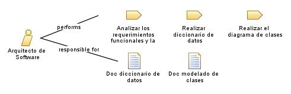

| Role: Arquitecto de Software |
 |
|
Relationships
 |
||
| Primary Performs | ||
|---|---|---|
| Modifies |
|
|
Main Description
| Este rol se encarga de realizar el diseño de la solución para las necesidades que surgen de la empresa al implementar un modulo de seguimiento para la constructora, tambien es apoyado por los roles de la disciplina de implementación. |